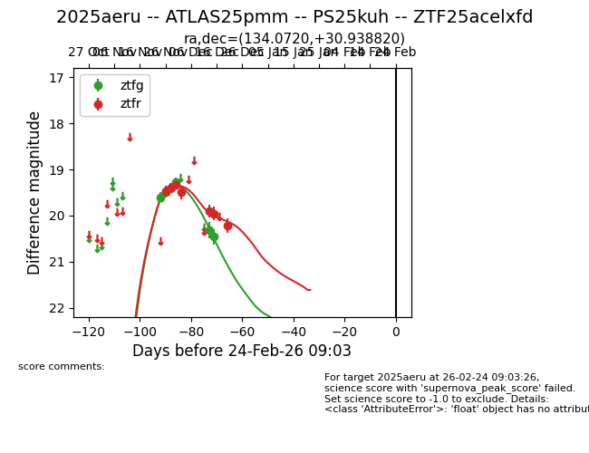
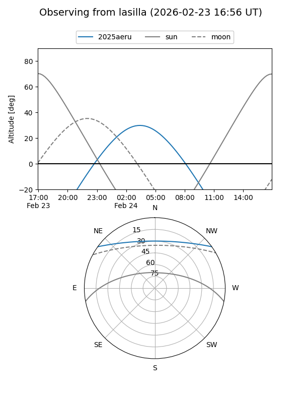
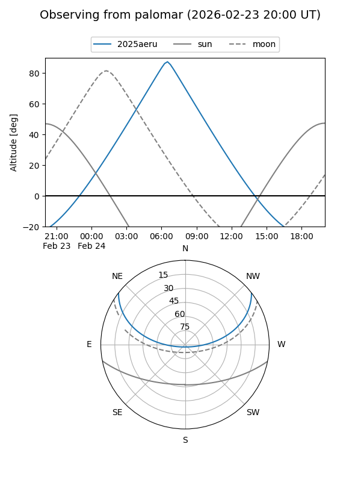
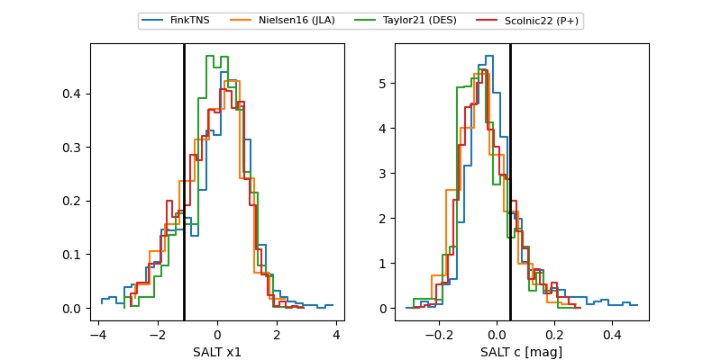

2025aeru
Target 2025aeru at 2025-12-30 22:44
Aliases and brokers:
FINK: fink-portal.org/ZTF25acelxfd
Lasair: lasair-ztf.lsst.ac.uk/objects/ZTF25acelxfd
ALeRCE: alerce.online/object/ZTF25acelxfd
TNS: wis-tns.org/object/2025aeru
YSE: ziggy.ucolick.org/yse/transient_detail/2025aeru
alt names
ZTF25acelxfd (ztf,fink_ztf)
2025aeru (tns,yse)
ATLAS25pmm (atlas)
PS25kuh (panstarrs)
Coordinates:
equatorial (ra, dec) = 134.0720,+30.93882
equatorial (HMS+DMS) = 08:56:17.29,+30:56:19.75
galactic (l, b) = (193.7714,+39.05118)
Flags:
Photometry:
last ztfg=20.46, ztfr=20.22
6 ztfg, 7 ztfr detections
Lightcurve

Visibility


Additional plots
